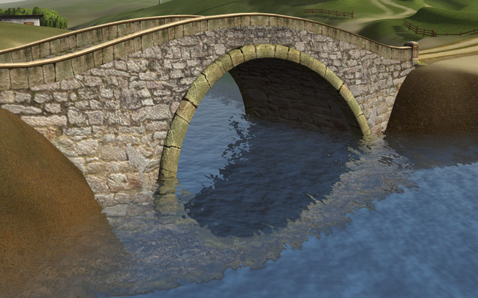
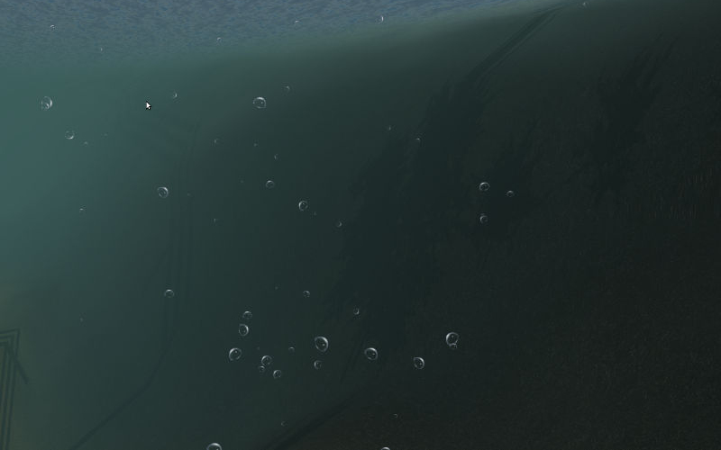
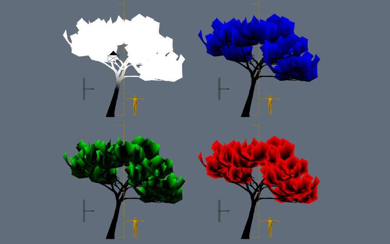

Outdoor Rendering¶
Water¶
Activation¶
For the supposed water material enable the Blend4Web > Special: Water option under the Material tab.
{kind=link}
Basic Settings¶
- Transparency
It is recommended to enable the gradient transparency
Game Settings > Alpha Blendand to tweak theTransparency > Alphavalue.- Lighting parameters
Lighting parameters for the water material can be set up as described in the Lighting Parameters section.
Waves Dynamics¶
Waves are simulated by normal maps with animated UVs (from 0 up to 4 pieces). For normal map the only shared image is used - the textures differs only by the Mapping > Size parameters. The water mesh must have a UV layer.
{kind=link}
Surface Wetting¶
Is carried out automatically. To turn the effect on enable the Wettable checkbox on the needed materials.
Reflection and Fresnel Effect¶
For the water material both static and dynamic reflection is supported as well as the Fresnel effect. See the Reflection section.
{kind=link}
Shoreline Smoothing¶
- Blend4Web > Water Settings > Shore Smoothing
Enable smoothing.
- Blend4Web > Water Settings > Water Absorb Factor
Light absorption coefficient for the water. The higher it is the more transparent isthe water.
Color Gradient¶
For color gradient the water material must have a texture with the Blend4Web > Shore Distance Map option enabled. This texture can be generated using the script for baking shoreline parameters.
- Blend4Web > Water Settings > Shallow Water Color
Shallow water color.
- Blend4Web > Water Settings > Shallow Water Color Factor
Shallow water color mixing factor.
- Blend4Web > Water Settings > Shore Water Color
Water color just at the shore line.
- Blend4Web > Water Settings > Shore Water Color Factor
Factor for mixing water color just near the shoreline.
{kind=link}
Foam¶
Activation¶
For creating foam add two diffuse textures into the water material slots. For these textures enable the Blend4Web > Water Foam option.

Setting up the Textures¶
- Influence > Color
Texture color influence factor. The default value is 1.0.
- Blend4Web > UV Frequency
Oscillation frequency of the animated UV coordinates. The default value is (1.0, 1.0).
- Blend4Web > UV Magnitude
Oscillation amplitude of the animated UV coordinates. The default value is (1.0, 1.0).
Setting up the Material¶
- Blend4Web > Water Settings > Water foam factor
General influence factor for the foam. The default value is 0.5.
Caustics and Chromatic Aberration¶
To create the caustics effect add one Voronoi type texture to the water material slot.
{kind=link}
{kind=link}
Underwater Environment¶
{kind=link}
Visibility Settings (“fog”)¶
- Blend4Web > Water Settings > Underwater Fog Density
Exponential factor which affects the density and visibility distance. The default value is 0.06.
- Blend4Web > Water Settings > Underwater Fog Color
Fog color. The default value is (0.5, 0.5, 0.5) (gray).
The god rays effect settings are also applied.
{kind=link}
Volumetric Waves¶
{kind=link}
Setting up¶
- Blend4Web > Water Settings > Wave Height
Wave height. The default value is 0.0.
- Blend4Web > Water Settings > Wave Length
Wave length. The default value is 10.0.
- Blend4Web > Water Settings > Dist Noise Scale 0
Size of the first component of the open water waves.
- Blend4Web > Water Settings > Dist Noise Scale 1
Size of the second component of the open water waves.
- Blend4Web > Water Settings > Dist Noise Freq 0
Frequency of the first component of the open water waves.
- Blend4Web > Water Settings > Dist Noise Freq 1
Frequency of the second component of the open water waves.
- Blend4Web > Water Settings > Dir Min Shore Fac
Minimum height decrease coefficient of the shore waves.
- Blend4Web > Water Settings > Dir Frequency
Frequency of the rolling of the shore waves.
- Blend4Web > Water Settings > Dir Noise Scale
Noise size for the shore waves.
- Blend4Web > Water Settings > Dir Noise Freq
Noise frequency for the shore waves.
- Blend4Web > Water Settings > Dir Min Noise Fac
Noise minimum for the shore waves.
- Blend4Web > Water Settings > Dist Min Fac
Minimum coefficient of mixing for open water waves.
- Blend4Web > Water Settings > Waves Horizontal Factor
Coefficient that shows how much the shore waves are shifted in the shoreline direction.
Settings for Surface Generation¶
- Blend4Web > Water Settings > Generate Mesh
Enable generated surface.
- Blend4Web > Water Settings > Number of Cascades
Number of cascades in the generated surface.
- Blend4Web > Water Settings > Detailed Distance
Maximum distance from camera to the last cascades edge.
Baking Shoreline Data to Texture¶
On the tools panel (hotkey “T”) under the Blend4Web tab open the B4W Shore Distance Baker panel. Set the parameters: maximum distance to shore (Maximum Distance) and the resulting texture size (Texture Size). Select a landscape object (or multiple objects) first, and then - a water object. Click the Bake Shore Distance button.
Depending on the texture size and the number of vertices in the processed meshes the execution time of the script may vary from a fraction of a second up to several minutes. Make sure that the texture named ShoreDistance is created for the water mesh.
Upon script execution some system properties are saved in the water material. Therefore the scene must be saved after the script has finished working.
Atmosphere¶
Scattering¶
Enable Sky Settings > Render Sky, then activate Sky Settings > Procedural Skydome under the World tab. Please note, that if a static skydome texture is being used at the same time, it will be replaced.
Note
Also, a procedural sky texture can be used to imitate scattered environment lighting similar to the static skydome texture. To do this, enable the Sky Settings > Use as Environment Lighting and Environment Lighting > Sky Texture checkboxes. If the world texture for environment lighting already exists, it will be replaced.
{kind=link}
Supported settings:
- Sky Settings > Sky Color
Base sky color. The default value is (0.087, 0.255, 0.6) (blue).
- Sky Settings > Rayleigh Brightness
Rayleigh scattering brightness (i.e. scattering on small particles). The default value is 3.3.
- Sky Settings > Mie Brightness
Mie scattering brightness (i.e. scattering on large particles). The default value is 0.1.
- Sky Settings > Spot Brightness
Sun spot brightness. The default value is 20.0.
- Sky Settings > Scatter Strength
Light scattering factor. The default value is 0.2.
- Sky Settings > Rayleigh Strength
Rayleigh scattering factor. The default value is 0.2.
- Sky Settings > Mie Strength
Mie scattering factor. The default value is 0.006.
- Sky Settings > Rayleigh Collection Power
Rayleigh scattering exponent. The default value is 0.35.
- Sky Settings > Mie Collection Power
Mie scattering exponent. The default value is 0.5.
- Sky Settings > Mie Distribution
Mie scattering distribution. The default value is 0.4.
Fog¶
Can be set up under the World tab.
- Blend4Web > Fog Settings > Fog Density
Exponential factor which affects density and the visibility distance. The default value is 0.0.
- Blend4Web > Fog Settings > Fog Color
Fog color. The default value is (0.5, 0.5, 0.5) (gray).
When a dynamic skydome is used the fog color is defined by the sky color.
Time of Day¶
Enable the Blend4Web > Dynamic Intensity checkbox for the lamp.
Time of day can be set by applications via API. Particularly time of day can be set using the Lighting interface of the Scene viewer.
{kind=link}
{kind=link}
Wind¶
- Wind strength and direction affect
water waves rolling frequency (at the moment only strength is taken into account)
Activation¶
Add a force field object of the Wind type.
Setting up¶
- Direction
Direction can be set by rotating the force field object.
- Force Fields > Strength
Wind strength. Located under the
Physicstab. The default value is 1.0.
Animation of Grass and Tree Leaves¶
Authoring resources for grass rendering is described in the Grass section.
Activation¶
Enable the Blend4Web > Wind Bending checkbox for the grass or tree object.
Setting up¶
The interface panel becomes visible after turning on the Blend4Web > Wind Bending checkbox.
{kind=link}
- Main bending > Angle
Angle amplitude of the “main” deviation under the influence of wind (in degrees). The default value is 10.0.
- Main bending > Frequency
Frequency of the “main” deviation under the influence of wind. The default value is 0.25.
- Main bending > Main Stiffness (A)
Text field for specifying the name of the vertex color layer which contains the information about the stiffness of the “main” deviation. Can be left empty.
- Detail bending > Detail Amplitude
Angle amplitude of the “detail” deviation caused by the influence of wind (in degrees). The default value is 0.1.
- Detail bending > Branch Amplitude
Angle amplitude of the branch deviation caused by the influence of wind (in degrees). The default value is 0.3.
- Detail bending > Leaves Stiffness (R)
Text field for specifying the name of the vertex color layer which contains the information about the stiffness of leaves. Can be left empty.
- Detail bending > Leaves Phase (G)
Text field for specifying the name of the vertex color layer which contains the information about the phase of leaves deviation. Can be left empty.
- Detail bending > Overall Stiffness (B)
Text field for specifying the name of the vertex color layer which contains the information about the overall stiffness of leaves. Can be left empty.
Vertex color layers should be present in the mesh if their names are specified.
{kind=link}